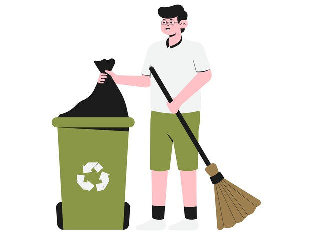

NURTURE EARTH AND NOURISH LIFE THROUGH AN ECO FRIENDLY LIFESTYLE
|
 Using cloth bags for shopping, as they are more eco-friendly. |
|
Plants gift life, joy, serenity, and purify air, fostering well-being. |
|
 |
|
 Preserve nature's beauty, health, and harmony; discard waste responsibly. |
|
Cycle for fitness, eco-friendliness, cost-effectiveness, and reduced carbon footprint. |
Compost garbage
Composting is a controlled, aerobic (oxygen-required) process that converts organic materials into a nutrient-rich, biologically-stable soil amendment or mulch through natural decomposition.
Save Water
Water efficiency is the practice of reducing water consumption by measuring the amount of water required for a particular purpose and is proportionate to the amount of essential water used.
Conserve Energy
Energy needs to be conserved to cut costs and to preserve the resources for longer use. Conventional energy sources pollute the environment by emitting harmful gases into the atmosphere. Conventional energy sources are limited and might expire one day.
Ditch Plastics
Plastic is even poisoning deep-sea animals. The impact of plastic pollution on marine life is horrific; overone million seabirds and 10,000 marine mammals die annually as a result. Now, it seems that, unbelievably, our plastic problem is so acute that even deep sea animals are suffering.
Sustainble Gifts
If you're planning to give someone a physical gift, opt for products made from recycled or upcycled materials, organic or sustainable fabrics, or ethically sourced ingredients. Consider alternatives to single-use items, such as reusable water bottles, shopping bags, and bamboo utensils